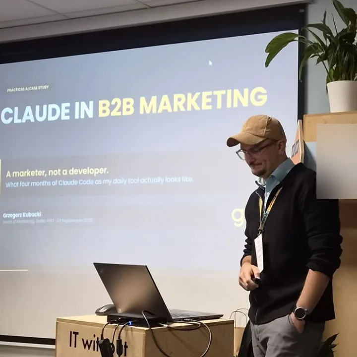
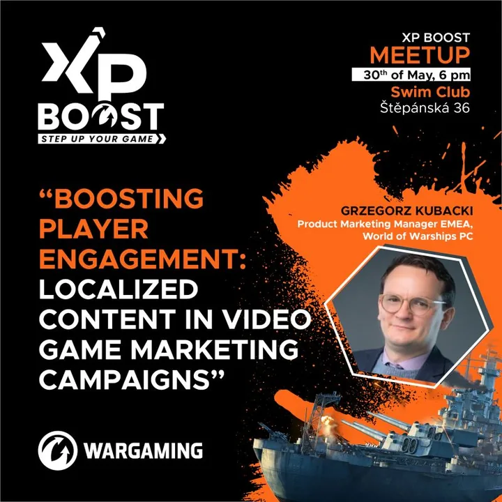

Positioning
Clear positioning and messaging for technical, compliance-driven products.
Greg Kubacki · Head of Marketing, Gallio PRO
Product marketing and marketing leadership for B2B technology. Positioning and demand generation through to pipeline, grounded in real data rather than assumptions.
51.11° N · 17.04° E · Wrocław, PL
Wrocław, Poland
Ten Square Games, then Head of Marketing at Gallio PRO, leading B2B marketing for an on-premise AI product.
€1M
Budgets owned, up to
+18%
New users from EMEA campaigns
Top 100
Product Marketing Influencers, 2024
01 / What I do
At Gallio PRO I lead marketing for an on-premise AI product that anonymises faces and licence plates in video and images, across EMEA and North America: strategy and positioning, the budget, agencies and vendors, and the funnel from first touch to revenue.
Clear positioning and messaging for technical, compliance-driven products.
The full B2B funnel, from demand generation through to pipeline and revenue, in step with sales.
My own measurement and attribution stack, and AI in daily work, so experiments run on real data.
Campaigns, partners and agencies across EMEA and North America, in English, Polish and Czech.
02 / Before Gallio
Product marketing EMEA, Wargaming, 2022 to 2025
IP partnerships · EMEA · 2023 to 2024
I implemented World of Warships' partnership campaigns with Star Trek and Megadeth across EMEA, using programmatic, influencer, retargeting and PR, and bringing together audiences that do not commonly overlap.
Institutional partnerships · UK · NL · PL
Gaming rooms in naval museums in three countries. I built the Polish Naval Museum project in Gdynia from the beginning.
Mixed reality · CZ · 2024
A mixed-reality campaign in Metro's Czech newspaper, and Flam's first partnership in gaming.
Event partnership · UK · 2024
World of Warships at Portsmouth Armed Forces Day, closing a week of D-Day 80 commemorations: game stations, a photobooth and panel discussions, delivered together with the agency GLTCH.
03 / Strengths
Gallup CliftonStrengths, top 5
I collect and keep references, data and ideas. Good campaigns start in the archive.
I read each person and each audience on their own terms, never from a template.
New tools, new markets, new skills. For me the learning itself is the fun part.
Show me what is broken. Finding the fault and fixing it is where I work best.
I spot patterns early, and see the other routes when the obvious one is blocked.
04 / Experience
2014 to 2018
Graphic design and print production, where I started
2018 to 2022
Digital marketing, then creative team lead, then professional services
2022 to 2025
Product Marketing Manager EMEA
2026
Growth Marketing Manager
2026 to now
Head of Marketing, B2B AI
05 / What people say
In fact, I often found myself learning from his unique approach and innovative thinking.
Focused on targets and crunching on numbers while acknowledging power of PR and personal relations.
06 / Recognition and speaking
Recognition
Speaking and interviews


07 / Contact
That is what I'm most interested in lately, along with shortening the distance between an idea and a measurable result.